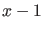
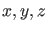
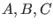

Next: Handling auxiliary functions in Up: The odefile of a Previous: The odefile of a Contents
| init, fun_eval, jacobian, jacobianp, hessians, hessiansp, der3, der4 , der5. |
There is a variety of options to create such odefiles. In all cases users should avoid using loops, conditional statements, or other specific programming constructions in the system definition.
First, an odefile can be defined by simply using the MATLAB editor (or, in fact, any text editor). This is likely to lead to errors and therefore not encouraged if the MATLAB symbolic toolbox is available and symbolic derivatives are desirable.
A second option is to use the GUI version of MATCONT by defining the problem in the 'System' window and then choosing the options ``symbolically" or ``numerically" to use symbolic or numeric (= finite difference) derivatives, respectively. The user functions can also be added in the GUI of MATCONT, using the menu `User function'.
From version 6.7 on MATCONT provides another possibility to create odefiles. It is in fact a shortcut to using the GUI version of MATCONT. As an example we will study the Rössler chaotic system:
An odefile can be created by calling SysGUI.new.
This opens a System window, which contains several fields and buttons. To identify the system, type for example
Roessl
in the Name field (it must be one word).
Input names of the Coordinates: X,Y,Z, and the Parameters: AA,BB,CC.
If shown, select symbolic generation of the 1st order derivatives by pressing the corresponding radio-button 1.
Finally, in the large input field, type the RHS of the truncated normal form map as
X'=-Y-Z Y'=X+AA*Y Z'=BB*X-CC*Z+X*Z
Avoid typical mistakes:
The odefile can be edited later on by calling SysGUI.edit(@name) where name is the name of an existing odefile. User functions can be added by calling SysGUI.userfunctions(@name). See Figure 6.
We note that if state variables, parameters or user functions are added or deleted then this constitutes another dynamical system. So either all computed data should be deleted or ignored, or the name of the system should be changed. The last option is recommended, in particular when the GUI is used.
A special point on a bifurcation curve that is specified by a user function has a structure as follows:
| s.index | index of the detected singular point defined by the user function. |
| s.label | a string that is in UserInfo.label, label of the singularity. |
| s.data | an empty tangent vector, values of the test and user functions in |
| the singular point. | |
| s.msg | a string that is set in UserInfo.name. |
We now give an odefile for the Rössler system using symbolic derivatives of all orders up to three and including the userfunction . Note that we have returned to state variables denoted by  and parameters .
function out = Roessl
out{1} = @init;
out{2} = @fun_eval;
out{3} = @jacobian;
out{4} = @jacobianp;
out{5} = @hessians;
out{6} = @hessiansp;
out{7} = @der3;
out{8} = [];
out{9} = [];
out{10}= @xis1;
% --------------------------------------------------------------------------
function dydt = fun_eval(t,kmrgd,A,B,C)
dydt=[-kmrgd(2)-kmrgd(3);
kmrgd(1)+A*kmrgd(2);
B*kmrgd(1)-C*kmrgd(3)+kmrgd(1)*kmrgd(3);];
% --------------------------------------------------------------------------
function [tspan,y0,options] = init
y0=[0,0,0];
options = odeset('Jacobian',handles(3),'JacobianP',handles(4),...
'Hessians',handles(5),'HessiansP',handles(6));
handles = feval(Roessl);
tspan = [0 10];
% --------------------------------------------------------------------------
function jac = jacobian(t,kmrgd,A,B,C)
jac=[ 0 , -1 , -1 ; 1 , A , 0 ; B + kmrgd(3) , 0 , kmrgd(1) - C ];
% --------------------------------------------------------------------------
function jacp = jacobianp(t,kmrgd,A,B,C)
jacp=[ 0 , 0 , 0 ; kmrgd(2) , 0 , 0 ; 0 , kmrgd(1) , -kmrgd(3) ];
% --------------------------------------------------------------------------
function hess = hessians(t,kmrgd,A,B,C)
hess1=[ 0 , 0 , 0 ; 0 , 0 , 0 ; 0 , 0 , 1 ];
hess2=[ 0 , 0 , 0 ; 0 , 0 , 0 ; 0 , 0 , 0 ];
hess3=[ 0 , 0 , 0 ; 0 , 0 , 0 ; 1 , 0 , 0 ];
hess(:,:,1) =hess1;
hess(:,:,2) =hess2;
hess(:,:,3) =hess3;
% --------------------------------------------------------------------------
function hessp = hessiansp(t,kmrgd,A,B,C)
hessp1=[ 0 , 0 , 0 ; 0 , 1 , 0 ; 0 , 0 , 0 ];
hessp2=[ 0 , 0 , 0 ; 0 , 0 , 0 ; 1 , 0 , 0 ];
hessp3=[ 0 , 0 , 0 ; 0 , 0 , 0 ; 0 , 0 , -1 ];
hessp(:,:,1) =hessp1;
hessp(:,:,2) =hessp2;
hessp(:,:,3) =hessp3;
%---------------------------------------------------------------------------
function tens3 = der3(t,kmrgd,A,B,C)
tens31=[ 0 , 0 , 0 ; 0 , 0 , 0 ; 0 , 0 , 0 ];
tens32=[ 0 , 0 , 0 ; 0 , 0 , 0 ; 0 , 0 , 0 ];
tens33=[ 0 , 0 , 0 ; 0 , 0 , 0 ; 0 , 0 , 0 ];
tens34=[ 0 , 0 , 0 ; 0 , 0 , 0 ; 0 , 0 , 0 ];
tens35=[ 0 , 0 , 0 ; 0 , 0 , 0 ; 0 , 0 , 0 ];
tens36=[ 0 , 0 , 0 ; 0 , 0 , 0 ; 0 , 0 , 0 ];
tens37=[ 0 , 0 , 0 ; 0 , 0 , 0 ; 0 , 0 , 0 ];
tens38=[ 0 , 0 , 0 ; 0 , 0 , 0 ; 0 , 0 , 0 ];
tens39=[ 0 , 0 , 0 ; 0 , 0 , 0 ; 0 , 0 , 0 ];
tens3(:,:,1,1) =tens31;
tens3(:,:,1,2) =tens32;
tens3(:,:,1,3) =tens33;
tens3(:,:,2,1) =tens34;
tens3(:,:,2,2) =tens35;
tens3(:,:,2,3) =tens36;
tens3(:,:,3,1) =tens37;
tens3(:,:,3,2) =tens38;
tens3(:,:,3,3) =tens39;
%---------------------------------------------------------------------------
function tens4 = der4(t,kmrgd,A,B,C)
%---------------------------------------------------------------------------
function tens5 = der5(t,kmrgd,A,B,C)
function userfun1=xis1(t,kmrgd,A,B,C)
userfun1=kmrgd(1)-1;
We observe the following: